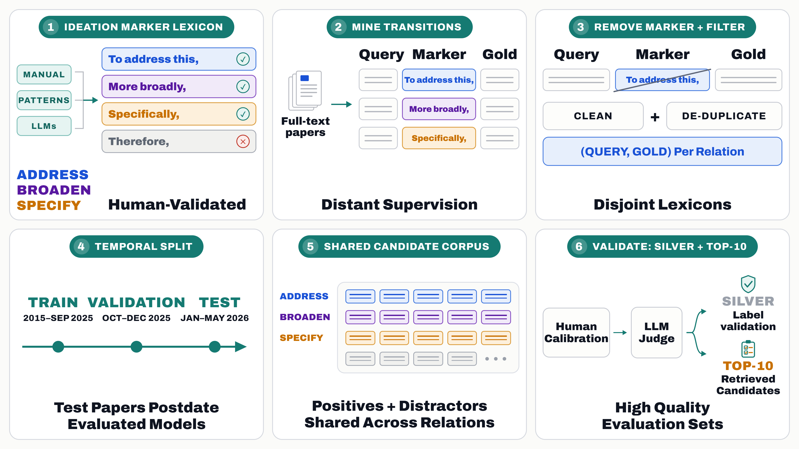
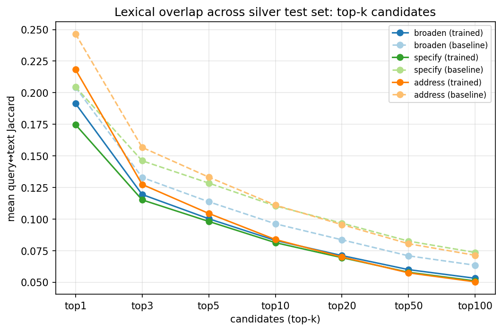

Ideation what?
Engaging with prior work is central to how researchers develop new ideas. Consider a researcher grappling with a problem — prior literature can inspire them in three distinct ways, each a distinct move through the ideation space:
|
A researcher grappling with
Reward hacking in RL-trained LLMs
|
→ |
ADDRESSaddressing the problem
A method that mitigates it: Reward-model ensembles
|
| → |
BROADENabstracting it
The general principle behind it: Goodhart's law
|
|
| → |
SPECIFYgrounding it
The same principle elsewhere: Recommender systems gaming engagement metrics
|
Standard search ranks by topic, so the papers that suggest a move stay buried
Most scholarly retrieval benchmarks evaluate topical relevance or whether a document answers a search query. These criteria do not distinguish between passages that play different ideation roles. Run the query above through BM25 or a dense encoder, and every top hit is about reward hacking:
The three inspirations above all sit in the same corpus, but they share almost no wording with the query, so a topical retriever ranks them far below. What we need is the relation between query and candidate, not the subject. Ratio organizes retrieval around exactly these three moves:
The query articulates a problem; the candidate is an approach or insight that can help address it.
The candidate reformulates the query at a broader scope, such that the query can be viewed as a particular instance of it.
The candidate instantiates or operationalizes the query through a concrete case, mechanism, or example.

We construct Ratio from full-text scientific papers using discourse-marker supervision and human–LLM validation to support retrieval across three ideation moves: ADDRESS, BROADEN, SPECIFY.
The Ratio Benchmark
Authors routinely signal how a sentence relates to its predecessor with discourse markers. We exploit this to harvest query–gold pairs directly from full-text papers:
query = “Our model is prone to overfitting.” • marker = “To address this issue,” (stripped, kept only as metadata) • gold = “we apply dropout”
These labels are not weak proxies: a marker such as “To address this issue,” is an explicit, author-asserted judgment by a domain expert that the following statement constitutes a solution direction for the stated problem. Unlike prior discourse-marker distant supervision, which is confined to sentence-pair classification, we extend markers to define relation-conditioned ideation retrieval over a corpus of millions of candidates: the marker is stripped from the input and determines which relation a candidate must instantiate with respect to a query, evaluated by ranking against a shared candidate corpus.
A valid marker must signal the move and refer back to the preceding sentence: More generally, is a BROADEN marker, but In general, is not, because it points to no specific sentence. Move-specific lexicons come from four sources: manual corpus analysis, short extensions of frequent prefixes (To address this potential bias,), generation by three LLMs from different model families, and Hearst-style pattern expansion. The three lexicons are disjoint and together hold 4,252 markers. Matched against all 366.6M consecutive-sentence pairs in the corpus, 809 of them fire; two NLP experts independently vetted all 809 and found every one valid. Markers rejected during curation become distractor markers whose sentences are added to the candidate pool as hard negatives, removing pool-membership shortcuts.

Construction of Ratio. Validated discourse markers identify pairs of consecutive sentences that realize ADDRESS, BROADEN, or SPECIFY. The first sentence becomes the query, and the second, without its marker, becomes the gold sentence. Publication dates define the splits, and all operations retrieve from a shared candidate corpus. An LLM judge calibrated against human labels filters the test pairs into the silver test set, and researchers evaluate the top-10 retrieved candidates.
Scale
Ratio comprises 3,017,476 query–gold pairs—2,779,177 SPECIFY, 222,707 ADDRESS, and 15,592 BROADEN. Splits are temporal to enforce a strict approach against contamination: training uses papers from 2015 through September 2025, validation October–December 2025, and test January–May 2026, after the public release of every evaluated model. The candidate corpus of each split is shared by all three relations, so selecting the retrieval operation does not reveal which candidates are relevant.
| Relation | Train | Validation | Test | |||
|---|---|---|---|---|---|---|
| Queries | Candidates | Queries | Candidates | Queries | Candidates | |
| SPECIFY | 2,605,515 | 13,787,834 | 79,583 | 361,172 | 94,079 | 404,371 |
| ADDRESS | 195,605 | 13,082 | 14,020 | |||
| BROADEN | 13,687 | 495 | 1,410 | |||
Temporal split with a shared candidate pool across relations. Each query is paired with a single gold candidate; the candidate corpus of each split is shared by all relations.
Human-calibrated validation
Mined pairs are noisy: a marker can appear even when the query is not understandable on its own or the gold sentence realizes the move poorly. Our primary evaluation set is therefore a silver test set of 17,579 queries (7,327 SPECIFY, 9,668 ADDRESS, 584 BROADEN), filtered by an LLM judge (GPT-5.4). For each move we wrote 4–6 prompt variants and kept the two that best matched human labels on 100 pairs; a pair is kept only if both prompts accept it. On 60 held-out pairs per move labeled by five annotators, the selected prompts agree with an individual annotator at a mean F1 of .87–.91 (SPECIFY), .73–.76 (ADDRESS), and .75–.81 (BROADEN); the annotators agree with one another at .90, .87, and .82. Because the silver set credits only the mined gold sentence, researchers further evaluate the top-10 retrieved candidates as inspirations (human evaluation).
Off-the-shelf retrievers miss the moves; move-specific fine-tuning helps a lot
We fine-tune three dense retrievers (all-mpnet-base-v2, ModernBERT-embed-large, Stella-en-1.5B-v5), one per move, with a contrastive loss, and compare each with its pre-trained baseline and with BM25. We also evaluate six pre-trained retrievers without fine-tuning: EmbeddingGemma-300m, Qwen3-Embedding-0.6B, ReasonIR-8B (trained for reasoning-intensive retrieval), and three late-interaction models (answerai-colbert-small-v1, GTE-ModernColBERT-v1, Reason-ModernColBERT). Finally, GPT-5-mini reranks the top 100 candidates.
Without fine-tuning, the best retriever for each move exceeds BM25 by only 12.0 (SPECIFY), 3.8 (ADDRESS), and 7.7 (BROADEN) MRR@10 points, and some score below BM25. Fine-tuning ModernBERT-embed-large multiplies its MRR@10 by 1.7×, 2.4×, and 1.6×, making it the strongest retriever on every move. Even so, it ranks the gold sentence in its top 10 for only 40.0% of ADDRESS and 41.4% of BROADEN queries.
| MRR@10 (silver test set) | SPECIFY | ADDRESS | BROADEN |
|---|---|---|---|
| BM25 (unigram) | 17.6 | 8.3 | 10.9 |
| Best pre-trained retriever | 29.6 (ReasonIR-8B) | 12.1 (ReasonIR-8B) | 18.6 (Stella) |
| ModernBERT-embed-large — baseline | 26.7 | 10.2 | 17.3 |
| ModernBERT-embed-large — fine-tuned | 46.7 | 24.5 | 27.3 |
| ModernBERT-embed-large — fine-tuned + GPT-5-mini rerank | 55.1 | 37.7 | 28.2 |
Headline results on the silver test set. Full tables for all 12 retrievers, setups, and metrics, and for the unfiltered test set, are in the paper.
LLM reranking adds further gains
Reranking helps all three fine-tuned retrievers, adding 8.4 to 15.5 MRR@10 points on SPECIFY and ADDRESS. Fine-tuning and reranking are complementary: for ModernBERT-embed-large, together they add 28.4 (SPECIFY) and 27.5 (ADDRESS) points over the baseline, well above either alone. First-stage recall bounds the gains: the fine-tuned retriever places the gold sentence in its top 100 for 80.8%, 61.3%, and 57.2% of SPECIFY, ADDRESS, and BROADEN queries.
The gains are not shortcuts
Not style. When the pool is restricted to gold sentences of the requested move, so that every candidate has that move's style, fine-tuning still adds 22.1, 19.4, and 14.8 MRR@10 points on SPECIFY, ADDRESS, and BROADEN. Not lexical matching. In all 24 comparisons (four cutoffs, three moves, two test sets), the fine-tuned retriever's top-k candidates share fewer words with the query than the baseline's do. Not a generic next-sentence skill. On SPECIFY and ADDRESS queries, each retriever scores best when fine-tuned on that move.

Mean lexical overlap between a silver query and its top-k candidates, for ModernBERT-embed-large before (baseline) and after (trained) fine-tuning on each move. Overlap is the Jaccard similarity of unigrams after stopword removal and stemming.
Researchers find more useful inspirations after fine-tuning
The silver metrics credit only the gold sentence, so other useful sentences in the pool count as wrong. We therefore asked researchers to judge the retrieved candidates as inspirations. Five computer science graduate students, each with at least one publication, labeled 125 silver queries from their own subfields (39 SPECIFY, 40 ADDRESS, 46 BROADEN). For each query, they saw the top 10 of ModernBERT-embed-large before and after fine-tuning as two shuffled, unlabeled lists, marked each candidate as useful or not, and chose the more useful list.
| Move (queries) | Setup | HR@10 | P@10 | MRR@10 | Preferred | Tie |
|---|---|---|---|---|---|---|
| SPECIFY (39) | Baseline | 50.0 | 12.7 | 37.4 | 3 | 10 |
| Tuned | 87.2 | 20.6 | 63.9 | 29 | ||
| ADDRESS (40) | Baseline | 42.5 | 7.0 | 21.7 | 4 | 7 |
| Tuned | 85.0 | 19.5 | 42.3 | 30 | ||
| BROADEN (46) | Baseline | 50.0 | 9.3 | 36.8 | 8 | 18 |
| Tuned | 72.8 | 16.0 | 49.5 | 22 | ||
| All (125) | Baseline | 47.6 | 9.6 | 32.1 | 15 | 35 |
| Tuned | 81.2 | 18.6 | 51.7 | 81 |
Human inspiration evaluation of the top 10 of ModernBERT-embed-large before (Baseline) and after (Tuned) fine-tuning (%). A candidate counts as relevant if the annotator marked it useful. All differences in HR, P, and MRR are significant (p < .01, paired permutation test). Preferred: annotations that chose the list; Tie: annotations that preferred neither.
Inspirations beyond the gold sentence
Annotators marked the gold sentence useful in 96.5% of the cases in which it appeared in the fine-tuned top 10, which supports the silver labels. Most useful candidates, however, are not the gold sentence. For 64.8% of queries, the fine-tuned top 10 contains a useful candidate other than the gold (42.0% for the baseline), and 91.7% of these come from a paper other than the query's; the 180 such candidates come from 176 distinct papers. Counting every useful candidate, the fine-tuned retriever reaches MRR@10 of 51.7, against 27.1 with the gold sentence alone. Silver scores are therefore a floor: the fine-tuned retriever finds inspirations across the literature, beyond the sentence that follows the query in its own paper.